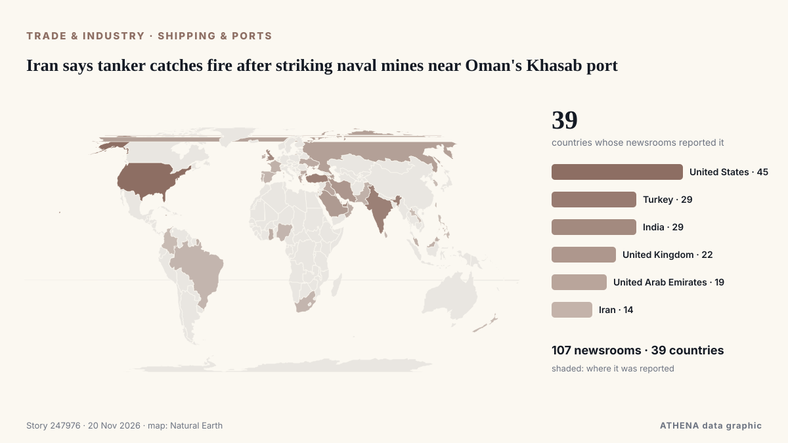

Commerce, industrie et infrastructures
SponsoriséPrésenté par  Cybernetics and Artificial Intelligence Lab Welcome to the Cybernetics and Artificial Intelligence Laboratory, established at the Department of Business Administration of the National and Kapodistrian University of Athens. The lab is headed by Professor Dimitrios Thomakos. The lab aims to do research that can be published in top venues. Our research uses tools and methods of Artificial Intelligence, and lies in the following areas: - Forecasting - Decision making - Cyber security - Finance We are always looking forward to collaborating with exceptional students!
Cybernetics and Artificial Intelligence Lab Welcome to the Cybernetics and Artificial Intelligence Laboratory, established at the Department of Business Administration of the National and Kapodistrian University of Athens. The lab is headed by Professor Dimitrios Thomakos. The lab aims to do research that can be published in top venues. Our research uses tools and methods of Artificial Intelligence, and lies in the following areas: - Forecasting - Decision making - Cyber security - Finance We are always looking forward to collaborating with exceptional students!
Les titres sont affichés en anglais, tels que publiés.

Transport maritime et portsIran says tanker catches fire after striking naval mines near Oman's Khasab port
UK maritime agency separately reports tanker hit by unknown projectile in Strait of Hormuz, with no casualties reported. de Anadolu Agency (English)
| 7 nov. | 44 |
|---|---|
| 8 nov. | 49 |
| 9 nov. | 118 |
| 10 nov. | 145 |
| 11 nov. | 109 |
| 12 nov. | 94 |
| 13 nov. | 85 |
| 14 nov. | 78 |
| 15 nov. | 65 |
| 16 nov. | 120 |
| 17 nov. | 94 |
| 18 nov. | 99 |
| 19 nov. | 61 |
| 20 nov. | 43 |
Singapore maritime plan teased as PSA breaks ground on Tuas phase 2
A new master plan will be released next year, focusing on expanding capacity across the city-state's maritime ecosystem, harnessing technology and innovation, and investing in the workforce, the… de The Journal of Commerce (JOC)
Greek PM signals construction restrictions on Mykonos & Santorini
Prime Minister Kyriakos Mitsotakis on Thursday raised the possibility of imposing restrictions on new building development on islands such as Mykonos and Santorini in Greece’s new spatial planning… de Keep Talking Greece
‘Doomsday prepping’ spikes in US as tech outages drive shopper paranoia
Recent emergency preparedness campaigns across the world have contributed to the consumer anxiety. de The Straits Times
Carnival Orders Two LNG-Powered Cruise Ships from Fincantieri
Italian shipbuilder Fincantieri has signed a contract with Carnival Corporation to design and build two dual-fuel cruise ships for Carnival Cruise Line, with deliveries scheduled for 2033 and… de MarineLink
Judge orders US agriculture chief to stop sending religious emails from official account
A US judge ordered, Agriculture Secretary Brooke Rollins to stop sending religious emails to employees from her official account,. de MyJoyOnline
S’porean charged with trafficking 19kg of cannabis at Ipoh airport
No plea was recorded from Chen Long in the Ipoh magistrates' court as the case falls under the High Court's jurisdiction. de Free Malaysia Today
Thailand seeks lower US tariffs on forced labour and excess capacity
Thailand is seeking to reduce additional US tariffs on Thai goods from 12.5% to 10% under measures related to forced labour, while pushing for the lowest possible tariffs under proposed US measures… de Khaosod English
President Zardari felicitates Oman’s Sultan on 56th National Day
Dubai: Sultan Haitham bin Tarik of Oman has granted a royal pardon to 344 prisoners to mark the Sultanate's 56th National Day, the Oman News Agency (ONA) reported on Thursday. de Gulf News
Sallaum Logistics opens inland customs bonded compound in the Port of Limburg, Genk
The new site extends the Sallaum Terminal in Antwerp inland reachable by river, rail and road Sallaum Logistics is opening. de Cyprus Shipping News
Russia cannot dictate 'unrealistic security demands': UK premier
Andy Burnham says Europe ready to 'enter serious discussions on European security, but only if a peace agreement is reached between Ukraine and Russia' de Anadolu Agency (English)
A third Ukrainian strike in 4 days halts rail traffic on Russia's Kerch Bridge to Crimea
Ukraine has launched a third aerial attack in four days on the Kerch Bridge, a crucial link between Russia and Crimea. de ABC News (International)
Egypt, Libya sign cooperation agreements after talks in Cairo
Deals cover energy, infrastructure, scientific research, labor, small businesses. de Anadolu Agency (English)
Trump tells Americans to ‘relax’ after spate of tech outages spark concern: ‘Everything’s good’
Trump’s remarks are the latest attempt by his administration to reassure the public after a series of chaotic disruptions. de The Independent
Steer Acquires Mercator International
Steer has completed the acquisition of Mercator International, a specialist ports, maritime and freight consultancy, as it continues to expand its international advisory business… de Maritime Professional
Ukraine launches another strike on Crimean Bridge
Ukraine reportedly launched a third strike on the Crimean Bridge this week, targeting its railway section after earlier attacks destroyed part of the road bridge. de Baltic News Network
Waymo pulls driverless taxis from freeways after California ban
California has barred Waymo autonomous taxis from its freeways after they were involved in at least two incidents in construction zones. de UPI World News
Crimean Bridge attacked again, Russia says
The Crimean Bridge has been attacked by Ukraine for the third time this week, Russia has said. de MyJoyOnline
US tightens Iran blockade with curbs on oil transfers at sea, advisory shows
London: The US military will treat ships that receive cargo at sea from vessels loaded in Iran as attempting to evade its blockade of Iranian ports and could take action against them, according to an… de Deccan Herald
China's 15th Five-Year Plan presents opportunities for growth of Asia-Pacific and beyond: Xi
Chinese president urges regional economies to uphold multilateralism, deepen cooperation in AI, digital trade. de Express Tribune
Strike Risk Grows at Busiest US Ports as Contract Talks Stall
Contract negotiations between security workers at the Ports of Los Angeles and Long Beach and their employers have stalled, setting up a “real potential” for a strike starting on Saturday that could… de Insurance Journal
See How Much Companies Are Getting in Tariff Refunds
Some firms are directing refunds to corporate leadership instead of reimbursing consumers, ProPublica finds Several companies that received refunds for paying Donald Trump’s tariffs have put those… de Guardian Business
ITF joins ISF Verify to help scale trusted digital seafarer certification worldwide
The International Transport Workers’ Federation has joined the ISF Verify project, to support the roll-out to the ITF’s seafarer network. de Cyprus Shipping News
PM Anwar credits govt measures for Malaysia’s strong growth despite West Asia crisis
KUALA LUMPUR, Nov 18 — The Madani government’s proactive measures to safeguard economic stability and ensure fuel supply... de Malay Mail
IMO’s Marine Environment Protection Committee MEPC 85 to discuss shipping emissions, pollution and other ocean issues
The Marine Environment Protection Committee (MEPC) of the International Maritime Organization (IMO) will meet for its 85th session at IMO. de Cyprus Shipping News
VARD and partners receive funding to Advanced Nuclear Propulsion for Ships
The Research Council of Norway has awarded $2 million (NOK 20 million) in initial funding to the Emerald Nuclear Norway-led. de Cyprus Shipping News
57% of organisations expect AI to make more than a quarter of warehouse operational decisions autonomously by 2028, MIT CTL–Mecalux study finds
A global survey of nearly 2,000 supply chain professionals shows at least moderate improvement in 87% of GenAI use cases,. de Cyprus Shipping News
Flights, banks, emails: What we know about a U.S. wave of tech outages
A string of technical outages across the U.S. has disrupted everything from air travel and banking to security systems, raising questions about whether the seemingly unrelated incidents are caused by… de CBC News
Russian flight lands in Turkey after bomb threat hoax
The Sukhoi Superjet 100 was flying from Mineralnye Vody in southern Russia to Antalya, where the COP31 UN climate summit is taking place. de Free Malaysia Today
Judge extends block on construction of Trump's triumphal arch
US District Judge Tanya Chutkan extended a restraining order issued on November 5 by two weeks that temporarily halted the arch’s construction. de The Jerusalem Post
Tesla will build Cybercabs in Berlin as US buyers face a $299 monthly fee
A €3bn expansion of Tesla’s factory near Berlin will make Cybercabs from 2029. de The Next Web
Irish man charged with destroying US military C-130 aircraft
NEW YORK: An Irish man has been charged with damaging a US military C-130 aircraft at an airport in Ireland in an attack that left the plane “effectively destroyed”, prosecutors said on Tuesday. de New Straits Times
Shipping Organizations Urges IMO Agreement on GHG Regulations
Nine major international shipping associations have issued a joint appeal to governments to reach agreement on global greenhouse gas (GHG) regulations, warning that… de Maritime Professional
CMA CGM triples profit as Q3 freight rates and cargo volumes rise
Shipping drives earnings growth, while logistics margins weaken despite higher revenue. de FreightWaves
Iran targeted US infrastructure with cyberattacks since start of war, Homeland Security chief says
US Homeland Security Secretary Markwayne Mullin did not link Tehran to the latest series of major technological outages across the country. de The Jerusalem Post